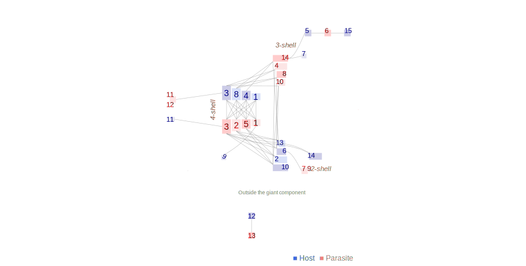

Network: RA_HP_030

Host 1 Amalaraeus penicilliger, 2 Amphipsylla marikovskii, 3 Catallagia dacenkoi, 4 Catallagia ioffi, 5 Ceratophyllus indages, 6 Corrodopsylla birulai, 7 Ctenophyllus armatus, 8 Megabothris advenarius, 9 Megabothris beljaevi, 10 Megabothris calcarifer, 11 Neopsylla acanthina, 12 Oropsylla alaskensis, 13 Peromyscopsylla ostsibirica, 14 Rhadinopsylla pseudodahurica, 15Tarsopsylla octodecimdentata
Parasite
1 Alticola macrotis, 2 Clethrionomys rufocanus, 3 Clethrionomys rutilus, 4 Lemmus sibiricus, 5 Microtus oeconomus, 6 Sciurus vulgaris, 7 Sorex arcticus, 8 Sorex caecutiens, 9 Sorex cinereus, 10 Sorex daphaenodon, 11 Sorex minutissimus, 12 Sorex roboratus, 13 Spermophilus parryii, 14Tamias sibiricus
Hadfield JD, Krasnov BR, Poulin R, Shinichi N (2013) A tale of two phylogenies: comparative analyses of ecological interactions. The American Naturalist 183(2): 174-187 North Russian Far East